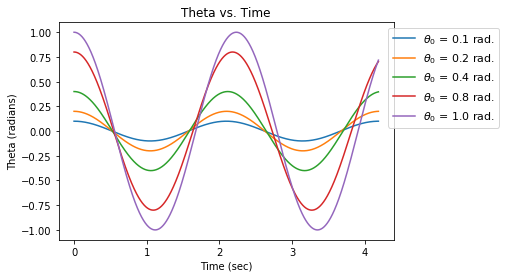
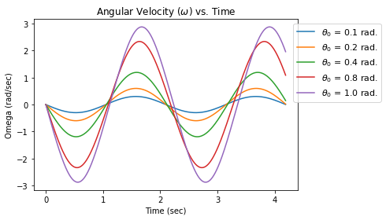
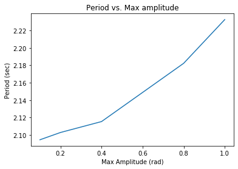

#Name: Jasmine Kobayashi
#Date:2/13/20
#Lab5: The simple pendulum
#---------------------------------------------------------------------------------------------------------------------------
import numpy as np
import matplotlib.pyplot as plt
#---------------------------------------------------------------------------------------------------------------------------
g下L = 9 #(g/L) (g=acceleration of gravity,L = length of pendulum) (units = sec^-2) #omega2
T = 2*np.pi/np.sqrt(g下L) #Period (units = seconds)
dt = 0.001*T #time step, in relation to period
theta = 0.1 #initial angle (theta0) (radians) #=x0 of mass on spring
av0 = 0.0 #initial angular velocity (omega0) #=v0 of mass on spring
tfinal = 2*T #final time (in relation to how many periods)
print("Exercise 1,pt. 1;theta0 = 0.1 & omega0 = 0.0: Period=",T,"seconds")
def vdot(g下L,theta): #acceleration(omega-dot);(b/c theta"(t) = -(g/l)*sin(theta))
return -g下L*np.sin(theta)
#Modified Euler
def SHO_mod(theta,av0,g下L,T,dt):
xm = [] #amplitude (theta)
vm = [] #angular velocity (omega)
time_m = [] #time
t = 0.0 #initial time
while t < tfinal:
time_m.append(t)
xm.append(theta)
vm.append(av0)
thph = theta +(0.5)*av0*dt #x^n+0.5 = x^n + (1/2)*(F^n)*dt
avp = av0 + vdot(g下L,thph)*dt #F^n+1; v^n+1 using x^n+0.5
avph = av0 + (vdot(g下L,theta)*dt)/2 #F^n+0.5 (v^n+0.5)
thp = theta + avph*dt #x^n+1 = x^n + (F^n+0.5)*dt
theta = thp
av0 = avp
t = t + dt
return xm, vm, time_m
[thm,avm,時m] = SHO_mod(theta,av0,g下L,T,dt)
#Changing initial theta
[thm1,avm1,時m1] = SHO_mod(0.1,av0,g下L,T,dt)
[thm2,avm2,時m2] = SHO_mod(0.2,av0,g下L,T,dt)
[thm3,avm3,時m3] = SHO_mod(0.4,av0,g下L,T,dt)
[thm4,avm4,時m4] = SHO_mod(0.8,av0,g下L,T,dt)
[thm5,avm5,時m5] = SHO_mod(1.0,av0,g下L,T,dt)
#Max amplitudes
amax1 = np.max(thm1[1:])
amax2 = np.max(thm2[1:])
amax3 = np.max(thm3[1:])
amax4 = np.max(thm4[1:])
amax5 = np.max(thm5[1:])
#Periods of the different initial thetas
T1 = np.abs(((時m1[thm1.index(amax1)]) - (時m1[thm1.index(np.min(thm1))]))*2)
T2 = np.abs(((時m2[thm2.index(amax2)]) - (時m2[thm2.index(np.min(thm2))]))*2)
T3 = np.abs(((時m3[thm3.index(amax3)]) - (時m3[thm3.index(np.min(thm3))]))*2)
T4 = np.abs(((時m4[thm4.index(amax4)]) - (時m4[thm4.index(np.min(thm4))]))*2)
T5 = np.abs(((時m5[thm5.index(amax5)]) - (時m5[thm5.index(np.min(thm5))]))*2)
amax = [amax1,amax2,amax3,amax4,amax5]
Tm = [T1,T2,T3,T4,T5]
print("theta0 = 0.1 rad: T =",T1,"sec")
print("theta0 = 0.2 rad: T =",T2,"sec")
print("theta0 = 0.4 rad: T =",T3,"sec")
print("theta0 = 0.8 rad: T =",T4,"sec")
print("theta0 = 1.0 rad: T =",T5,"sec")
#Graphs
plt.figure(1)
#plt.plot(時m,thm,"k")
plt.plot(時m1,thm1,label="$\\theta_0$ = 0.1 rad.")
plt.plot(時m2,thm2,label="$\\theta_0$ = 0.2 rad.")
plt.plot(時m3,thm3,label="$\\theta_0$ = 0.4 rad.")
plt.plot(時m4,thm4,label="$\\theta_0$ = 0.8 rad.")
plt.plot(時m5,thm5,label="$\\theta_0$ = 1.0 rad.")
plt.legend(fontsize = 11,loc='upper center',bbox_to_anchor=(1.15,1.0))
plt.title("Theta vs. Time")
plt.xlabel("Time (sec)")
plt.ylabel("Theta (radians)")
plt.figure(2)
#plt.plot(時m,avm,"k")
plt.plot(時m1,avm1,label="$\\theta_0$ = 0.1 rad.")
plt.plot(時m2,avm2,label="$\\theta_0$ = 0.2 rad.")
plt.plot(時m3,avm3,label="$\\theta_0$ = 0.4 rad.")
plt.plot(時m4,avm4,label="$\\theta_0$ = 0.8 rad.")
plt.plot(時m5,avm5,label="$\\theta_0$ = 1.0 rad.")
plt.legend(fontsize = 11,loc='upper center',bbox_to_anchor=(1.15,1.0))
plt.title("Angular Velocity ($\omega$) vs. Time")
plt.xlabel("Time (sec)")
plt.ylabel("Omega (rad/sec)")
plt.figure(3)
plt.plot(amax,Tm)
plt.title("Period vs. Max amplitude")
plt.xlabel("Max Amplitude (rad)")
plt.ylabel("Period (sec)")Exercise 1,pt. 1;theta0 = 0.1 & omega0 = 0.0: Period= 2.0943951023931953 seconds
theta0 = 0.1 rad: T = 2.094395102393065 sec
theta0 = 0.2 rad: T = 2.1027726828026374 sec
theta0 = 0.4 rad: T = 2.1153390534171956 sec
theta0 = 0.8 rad: T = 2.1823596966937666 sec
theta0 = 1.0 rad: T = 2.232625179151195 secText(0, 0.5, 'Period (sec)')

